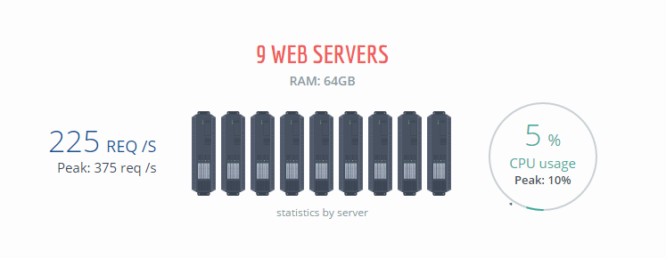
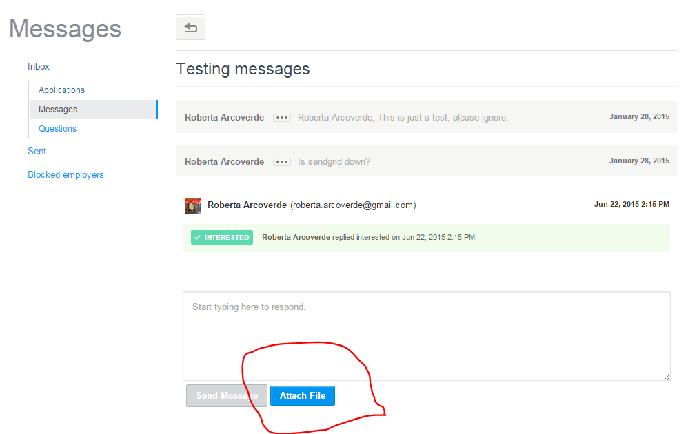
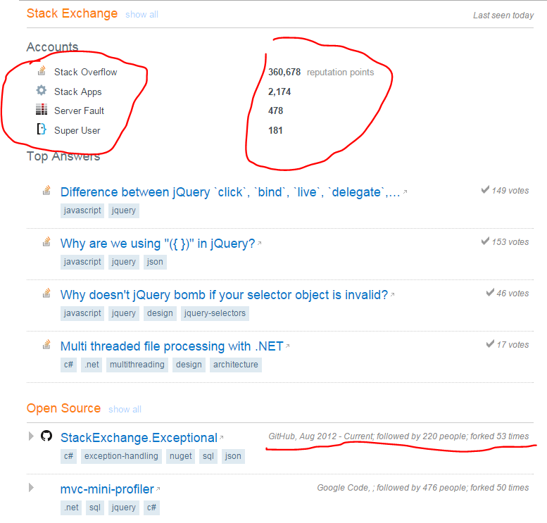
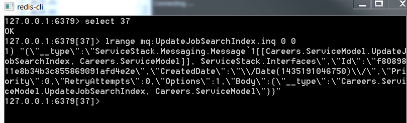
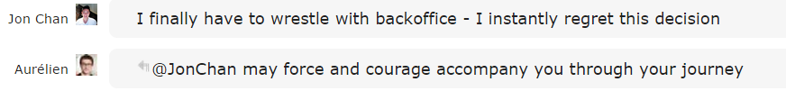
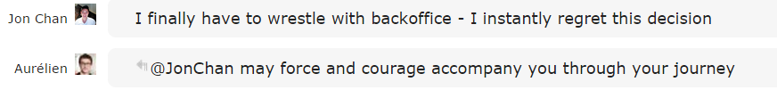

Reescrevendo um Processador de Mensagens
uma história de fracassos
Roberta Arcoverde / @rla4
.NET Architects Days 2015
/whois roberta
- recifense
- cientista da computação, UFPE, 2008
- mestre em informática, PUC-Rio, 2012
- participante do DNA desde 2008
- full-stack developer, Stack Exchange, 2014
- mãe do Dostoievski e do Turing

- começou em 2008
- 5MM usuários cadastrados
- 50MM visitantes únicos por mês
- 700MM page views por mês
- top 50 sites mais acessados do mundo*
>140 sites

450k usuários registrados, ~4000 vagas ativas/dia
- começou em 2010
- c#, asp.net mvc
- sql server
- elasticsearch
- redis
- 11 desenvolvedores, 3 designers
tudo isso com apenas 9 servidores*
*mas 1 bastaria
upload de arquivos (av scans)
 |
 |
integração com outros sistemas
precisamos executar tarefas potencialmente longas em background, de forma assíncrona, respeitando as restrições de performance e infraestrutura existentes
surge o backoffice
e aí vocês já começam a entender o título da palestraO que o Backoffice faz?
- virus scan
- atualização de índices elasticsearch
- sincronização com sistemas externos (github, codeplex...)
- emails

Enviando uma mensagem
// Careers.Controllers.PingController.TestPing()
MessageFactory.Publish(new Ping());
Recebendo e processando uma mensagem
// Careers.Backoffice.PingService
// método responsável por processar a mensagem do tipo Ping
public object Any (Ping pingMessage) { }
parece simples, porque é
Enviando uma mensagem - Fluxo

parece complicado, porque é
Arquitetura das mensagens
public class ScanFile
{
public int FileId { get; set; }
public int MessageAttachmentId { get; set; }
}

Arquitetura dos serviços
- suporte a callbacks (como requisições http)
- contexto transacional per-request
public class ScanFileService : BackOfficeService
{
private readonly IVirusScanner _virusScanner;
private readonly IFileService _fileService;
public object Any(ScanFile request)
{
var file = _fileService.GetFile(request.FileId);
var fileIsSafe = (file.ScanDate != null && file.ScanError == null);
string scanError = null;
if (!fileIsSafe)
{
fileIsSafe = _virusScanner.TryScan(file.BinaryData, out scanError);
}
return new ScanFileResponse
{
FileId = request.FileId,
MessageAttachmentId = request.MessageAttachmentId,
IsSafe = fileIsSafe,
ScanError = scanError,
};
}
}
tão lindo que virou produto
*mas nem tudo foi fácil
Fracasso #1: kd os emails?
- bug gerou 500.000 mensagens de sincronização com o GitHub de uma só vez
- backoffice ficou sobrecarregado e mensagens de envio de e-mail nunca foram processadas
solução: cada mensagem passou a ser processada por uma thread dedicada
Fracasso #2: kd os scans?
- durante quase 12h, o backoffice parou de escanear arquivos enviados
- aplicação "dormiu" e ninguém notou
solução: criação de um novo serviço de Heartbeat cujo único propósito é evitar app recycles
Fracasso #3: starvation
- fila para sincronizar informações com o Stack Overflow parou de ser processada
solução: sentar e esperar
 essa imagem ainda me dá um certo pânico
essa imagem ainda me dá um certo pânico
Fracasso #4: redis clusters
- 2 redis servers, 1 primário e 1 readonly
- Backoffice usa o cliente redis do ServiceStack - que não suporta redis clusters
- implementação própria pra notificar failovers é frágil

outras desvantagens
- ServiceStack
- ServiceStack.Text
- ServiceStack.Orm
- ServiceStack.Redis
- ServiceStack.Common
- 5 dependências, 8 DLLs, + de 30k linhas de código
- 11 dos 28 serviços só pra monitoramento e debugging
developers and sysadmins hate it!

 

Solução: Reescrever como serviço Windows
- single thread, dois loops. só!
- remove complexidade desnecessária (IIS, ServiceStack)
- executa localmente como console app, deployed como windows service em 3 máquinas
- simplicidade > solução genérica
o novo fluxo
- Timer dispara o processo
- Loop iterando todas as filas existentes
- Para cada fila, loop contínuo processando todas as mensagens

reliable queue pattern
- suporte nativo do redis através do comando RPOPLPUSH
- evita que uma mensagem se "perca" caso o serviço seja interrompido antes de finalizar seu processamento
- operação atômica pega a mensagem da fila de entrada e joga numa fila de processamento
while ((json = redisDb.ListRightPopLeftPush(queueName, processingQueueKey)) != null)
{
try
{
message = MessageSerializer.Deserialize(json, messageType);
ProcessMessage(message);
}
catch (Exception exception)
{
Log(exception);
}
finally
{
redisDb.ListRemove(processingQueueKey, json);
if(TimedOut(startTime)) break;
}
} Round Robin(ish)
- velho problema de starvation
- loop que itera entre as mensagens de uma fila é interrompido depois de 10 minutos
- graceful: nenhuma exceção é lançada
Resultados legais
- saímos de ~5k para 300 linhas de código no message broker
- 11 serviços inúteis eliminados
- mais de 50 classes removidas
- melhor performance em ~200% (em dev)
Resultados legais
- mantivemos o que fazia sentido
- unificamos o cliente Redis, o JSON serializer e o ORM